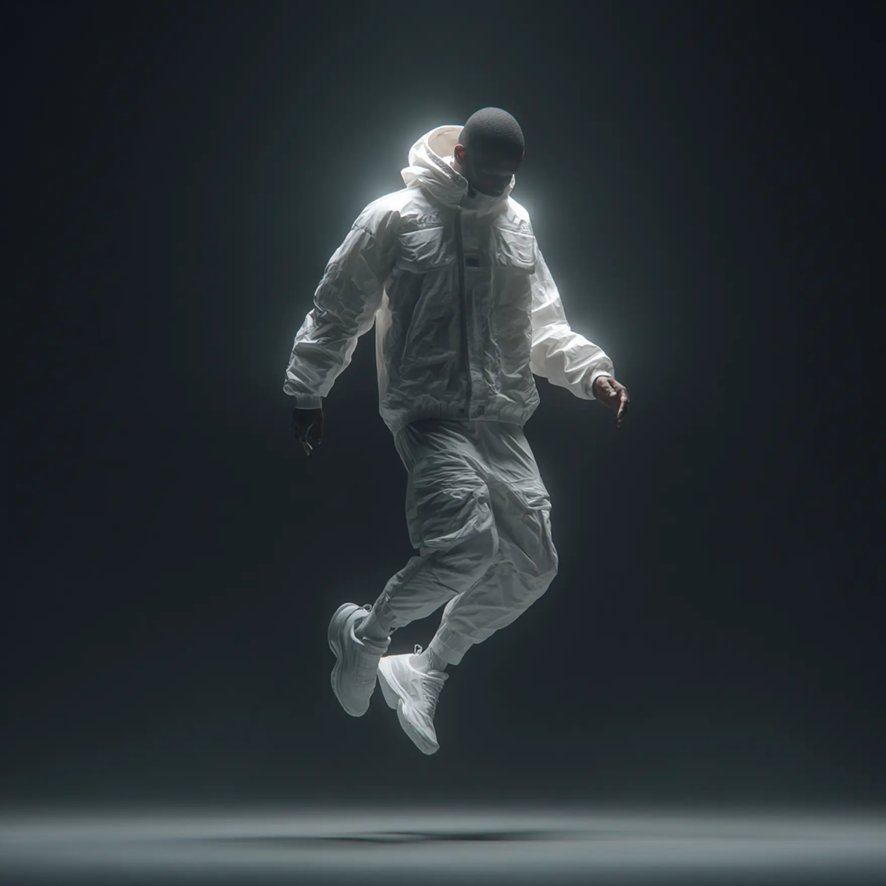
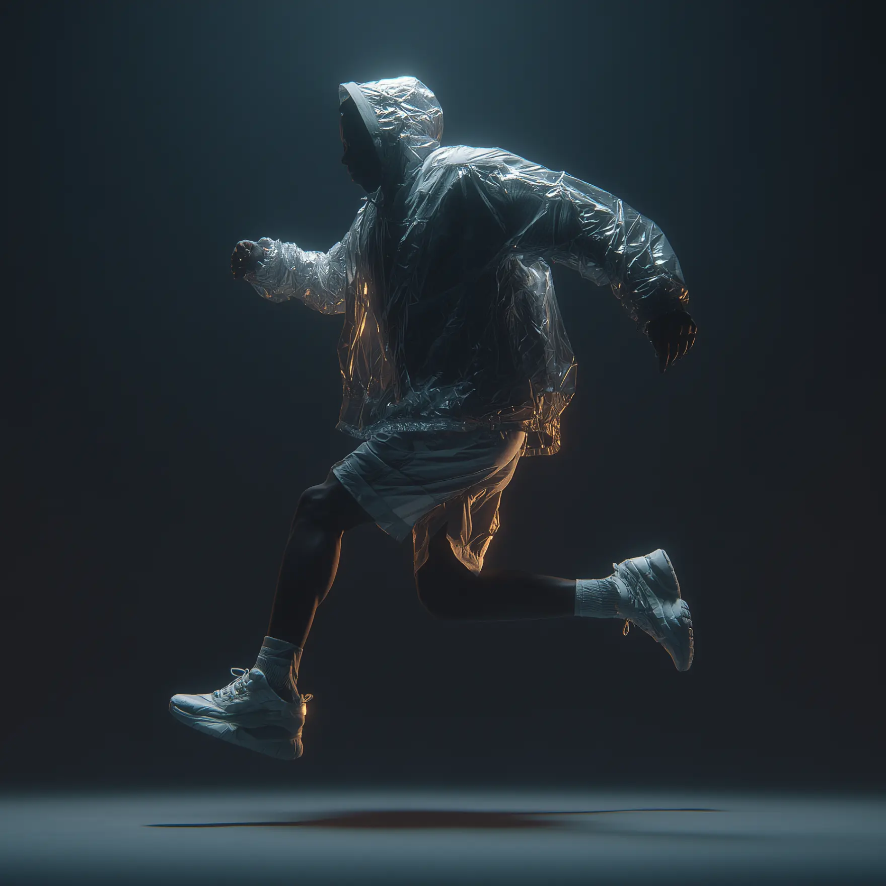

We designed a system where AI doesn’t just process data it interprets movement, adapts to context, and delivers real-time insights. The project began with a challenge: how to translate raw visual streams into actionable intelligence.
This case became an experiment in merging creativity, speed, and precision. Every frame mattered, every model iteration pushed closer to a system that could see, decide, and act instantly.
Client
Confidential
Service
AI Vision System Development
Year
2025


Our approach turned complex, unstructured video feeds into reliable decision points. By combining neural vision pipelines with optimized infrastructure, the solution reduced latency by 60% while scaling to thousands of requests per second.